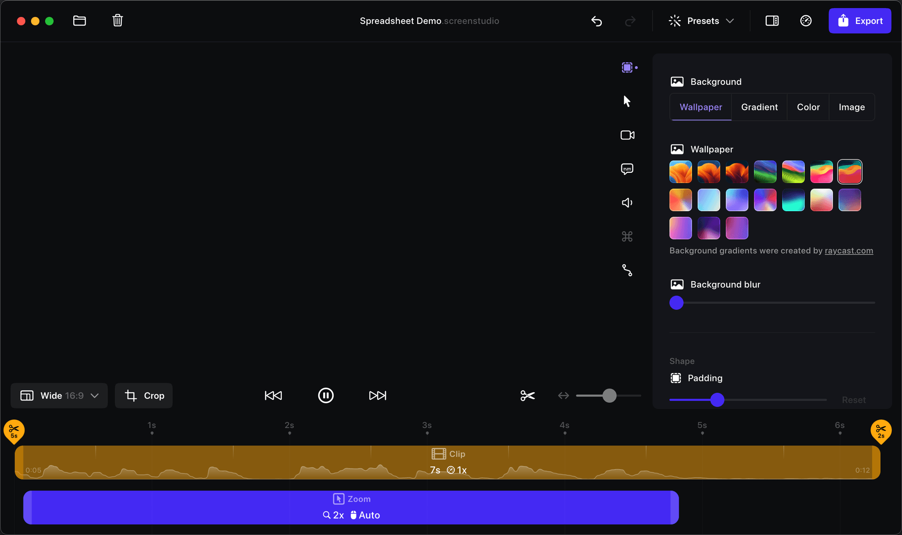
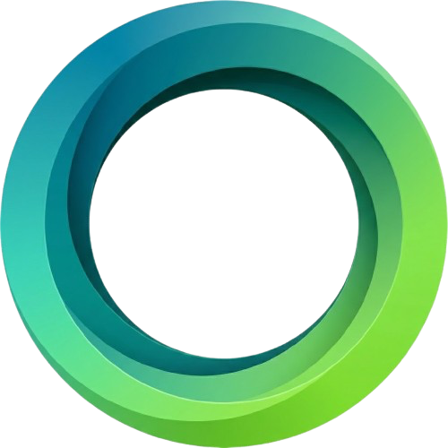

A real editor, not a trimmer
Viewport, inspector, and a timeline with draggable zoom blocks. Swap the background to a macOS wallpaper, a gradient, or a solid — tune padding and shape live.

OpenScreen StudioA free, open-source Screen Studio alternative for macOS. Record your screen, webcam, and system + mic audio in-process with ScreenCaptureKit, then let the editor auto-zoom on every click, smooth the cursor, drop your capture onto a gorgeous wallpaper, and export to mp4 or gif.

Viewport, inspector, and a timeline with draggable zoom blocks. Swap the background to a macOS wallpaper, a gradient, or a solid — tune padding and shape live.
A cursor sidecar records every click while you record. The editor derives smooth zoom segments from it — punch-in where it matters, automatically.
Cursor position, clicks, and shape transitions are tracked at ~poll rate and replayed as a clean, oversized overlay on top of your footage.
Per-display transparent picker overlays let you grab a whole screen, a single window, or drag out an exact region before the 3-2-1 countdown.
Recording is a native SCStream writing mp4 directly via ScreenCaptureKit. No ffmpeg in the capture path — just one clean artifact per take.
Your camera records to a hardware-encoded sidecar via AVFoundation, kept in sync with the screen. The editor composites it as a draggable, resizable bubble.
ScreenCaptureKit captures system and microphone audio as separate, frame-aligned tracks — independently trimmable and mutable on the timeline.
An offline pipeline composites screen, camera, and background on WebGL2 and encodes to mp4 or gif — straight to a file or the clipboard.
Full transport control from a frameless always-on-top pill — or stop from the macOS menu bar and the app finalizes the same artifact.
Transparent overlays span every display. Choose a screen, window, or dragged area.
ScreenCaptureKit streams the screen, webcam, and system + mic audio at 30fps while a cursor track polls clicks and shapes.
On stop, the mp4 lands in ~/Movies/OpenScreen Studio alongside its sidecars — .cursor.json, the camera movie, and the audio tracks.
The editor reads the sidecars, derives auto-zoom, paints the cursor overlay, frames it on a wallpaper, then exports to mp4 or gif.
No telemetry, no account, no paywall. Clone it, build it with Bun, ship your own. macOS 13+ (recording path needs macOS 15+).
// install deps + fetch bundled ffmpeg
bun install
// run the desktop app (frontend + Rust)
bun run tauri dev